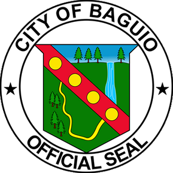
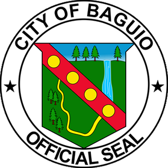
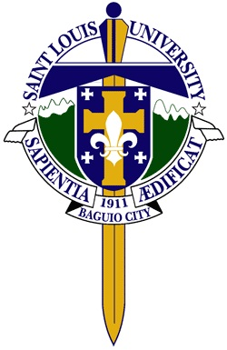

Home
The Officials
Good Governance
Decision Making
Good Governance in City Camp Proper
Documents
Awards
Gallery

Home
The Officials
Good Governance
Decision Making
Good Governance in City Camp Proper
Documents
Awards
Gallery
City Camp Proper


About Good Governance
Good Governance is a concept or model used for decision-making. The primary purpose is to plan and make decisions, implemented or not, in creating policy that will guide its community to good governnace. It doesn't only focus on what the committees have talked about and decided during their agenda the officials must hear and consider the suggestions, recommendations and as well as the needs and demands of the community. It is not bias whereby the community. In order to achieve good governanceeveryone must adhere from this policy and not only by selected people. It must be balance and transparent for both the officials and the community giving them freedom to contribute in making better policies. The decisions doesn't only focuses on their constituents but for the entire community as well.
Good Governance in City Camp Proper
Barangay City Camp Proper is one of the friendliest barangay in Baguio City headed by Honorable Aurora G. Abellera. The offials here are very hospitable and approachable. They make sure that every needs and requests of a citizen who, for an instance, is requesting for a barangay clearance, business permit and the like are going to be processed as soon as possible. That is how attentive they are when it comes to processing important matters. There is a time allotted for every transaction and the officials will see to it that these requests will be processed in the given period of time which is really convenient for those who requested such files. Unlike in other barangays it will take hours or even days before they could even get what they needed. Also, all the reports coming from the committee on Peace and Order, finance, women and children's welfare and the like will be collected and carefully reviewed. These reports were used as a guideline in creating decisions that will help the community for further advancement. They want their people to have confidence by making decisions transparent and in an accountable way.
Decision Making
This is where they usually conduct formal meetings, setting their agenda, and the distribution of works. All the reports coming from the environment, peace and order and other committees are carefully reviewed and discussed that will help them in coming up with decisions, solutions and further improvements in addressing concerns and problems in their barangay. The officials are the representatives of their community and it is their responsibility to represent the interests of the community. During the decision-making process they will gather information, state their opinions and make final decisions. This is also a reminder to the officials that they have to be open because they are acting on behalf of their community.
Documents
All documents pertaining to budgetary, financial reports of the implemented projects and programs of their barangay, including expenditures are posted in the bulletin board outside their office so that everyone can view all these transactions. They did this so everyone can see the full disclosure.
Awards
The City Camp Proper, headed by Hon. Aurora G. Abellera is recognized for being competent, excelent and one of the friendliest barangay in Baguio city. Back in 2011, in celebration of Women's Month, the City Government of Baguio conducted a search on outstanding women leaders of Baguio City held on March 8, 2011. Hon. Aurora G. Abellera was one of the awardees and was also awarded for Public Service in recognition for the efforts in her field that contributed to the development of their barangay. Their barangay have been nominated and also won numerous awards. A plethora of awards doesn't only prove barangay City Camp Proper for being one of the outstanding barangay in Baguio City. In return for all the efforts they exerted and their dedication in fulfilling their tasks to serve the community.
